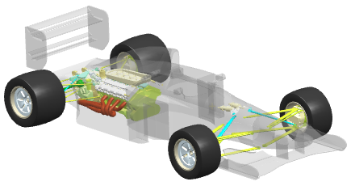

产品轮廓概述
在不必加载组件的情况下使用产品轮廓命令创建一组几何体，以针对装配的总体大小和形状给出提示。
在处理形成大得多的装配(如发动机缸体或机身)的某个部件的组件时，定义轮廓时会使您轻松地快速感知对象的位置。当您不熟悉的组件出问题时，这将非常有用。
可以设置产品轮廓的显示属性：颜色、线型和透明度可帮助将轮廓与其他几何体区分开来。
|
|
|
已完全加载装配 |
|
 |
|
装配的体面板部件关闭，并显示透明的灰色产品轮廓。 |

产品轮廓几何体位于产品轮廓用户默认设置所设置的图层上。
|
提示 |
要查找用户默认设置，请选择文件→实用工具→用户默认设置，然后使用查找默认设置 |
创建产品轮廓时，显示部件中将会自动创建名为 Product_Outline 的图层类别，并在该图层上创建小平面表示。
|
注释 |
产品轮廓对话框中定义的显示属性适用于 Product_Outline 图层上的所有几何体，包括它的实体和小平面表示。 |
如果选择了装配级的几何体，则会有一条消息通知您，该几何体将移到产品轮廓图层。显示产品轮廓通过控制产品轮廓图层的可见性来隐藏或显示产品轮廓。
位于何处？
|
先决条件 |
具有完整菜单的角色 |
|
工具条 |
装配→显示产品轮廓 |
|
菜单 |
装配→关联控制→定义产品轮廓 装配→关联控制→显示产品轮廓 |